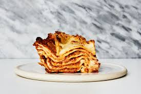

Lasagna

No Bullshit Lasagna Recipe
Ingredients
- 12 oz Lasagna Noodles
- 1/2 Stick Butter
- 1 qt Spaghetti Sauce
- 8 oz Cheddar Cheese
Instructions
- Preheat oven to 350 F.
- Brown ground beef, drain, set aside
- Layer Lasagna then add 1/4th of pasta sauce, 1/3rd ground beef, 1/3rd cheese
- Repeat last step x3
- Add butter, leftover sauce, and cheese to top
- Bake for 40 minutes
It's just noodles, meat, sauce, and cheese in a dish. It probably won't taste great but it's cheaper than delivery.